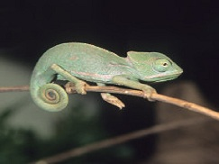
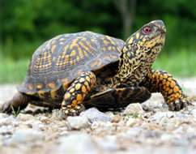
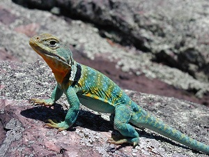
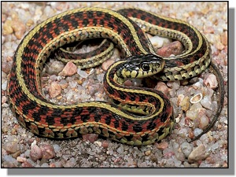

| Cammie | Baby |
|---|---|
|  |  |
| Cammie is a two year old chameleon. He loves to eat crickets. To make him happy, make sure his cage is a minimum of 3' by 3' by 4' tall and screened on three sides. | For Baby, provide a large outdoor habitat with a sandy, well-drained substrate. In this outdoor habitat, allow natural grasses to grow for the tortoises to graze on. |
| Lizzie | Gert |
|  |  |
| Lizzie is relatively easy to care for, she eats crickets, worms and flies. She likes you to mist water on the leaves of her plants and she will lick it off. | Gert is a common garter snake. She is gentle and likes to eat feeder guppies or earthworms and needs a bowl of water for her to drink and dip her body into. |
Adopt a Pet
Pet of the Week
Please click on the photo to find out information on the care of the featured pet.